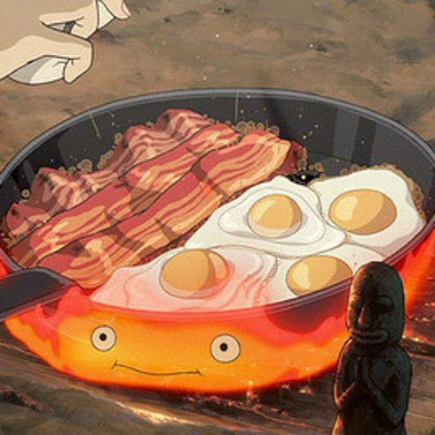

Howl's Breakfast

Description
The iconic breakfast from Howl's Moving Castle
Ingredients
- 3 slices of thick cut bacon
- 4 eggs
- 1 loaf bread
- 1 slab cheese
Steps
- eat a large pan over medium-high heat.
- Add 3 slices of bacon to the pan and cook until crispy. Push them to one side of the pan.
- Reduce the heat to medium. Crack 4 eggs directly into the pan next to the bacon. Cook until sunny side up eggs are to your preference.
- Remove the pan from the heat.
- Cut desired amount off from the loaf of bread.
Serve the bacon, eggs, bread and cheese!